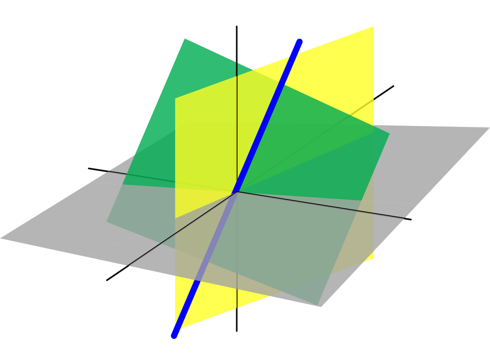

Linear Algebra
In machine learning, linear algebra is a mathematical framework used to represent and manipulate data and models, with a focus on linear equations and their properties. It is used to perform operations such as matrix multiplication, linear regression, and principal component analysis (PCA) that form the basis of many machine learning algorithms. Linear algebra provides a foundation for understanding and working with complex systems of equations that arise in machine learning, enabling efficient computation and optimization of models to make accurate predictions and decisions.
Application:
- Computer graphics: Linear algebra is used extensively in computer graphics to represent and transform 3D objects in space.
- Cryptography: Linear algebra is used in the development of encryption algorithms that are used to secure communication and data storage.
- Engineering: Linear algebra is used in many engineering applications, including signal processing, control systems, and structural analysis.
- Physics: Linear algebra is used in physics to model and analyze complex physical systems, such as quantum mechanics and general relativity.
- Economics: Linear algebra is used in economics to analyze large datasets and develop models that describe economic behavior.
- Machine learning: Linear algebra is an essential tool in machine learning for the development and optimization of algorithms that process and analyze large datasets.
- Robotics: Linear algebra is used to model and control the motion and behavior of robots, enabling them to navigate and interact with their environment.
These are just a few examples of the many applications of linear algebra. Linear algebra provides a powerful mathematical foundation for modeling and solving problems in a wide range of fields.